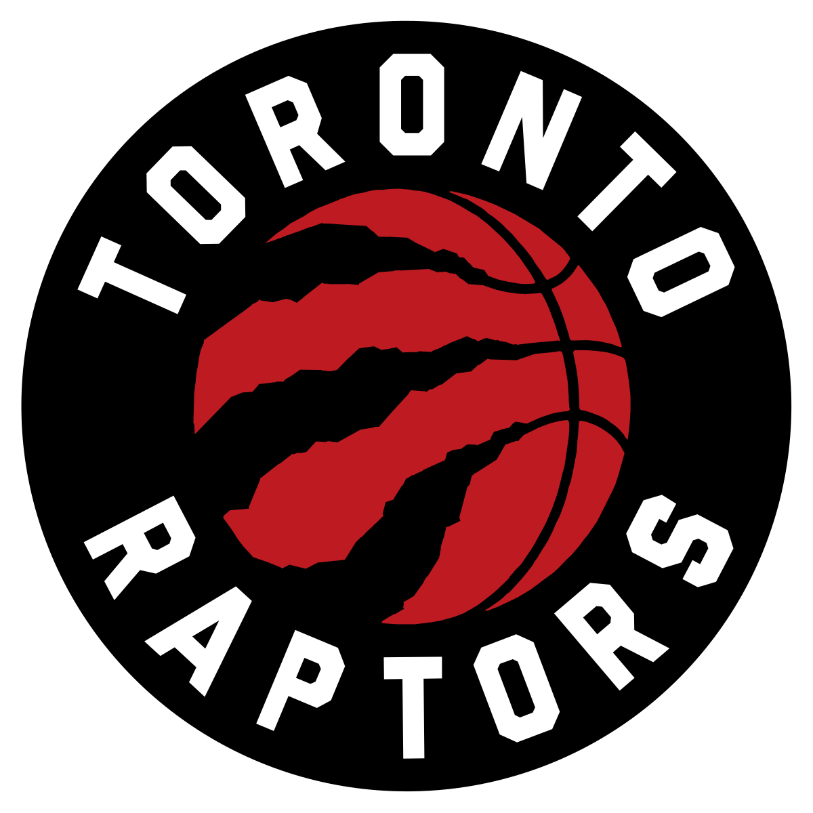
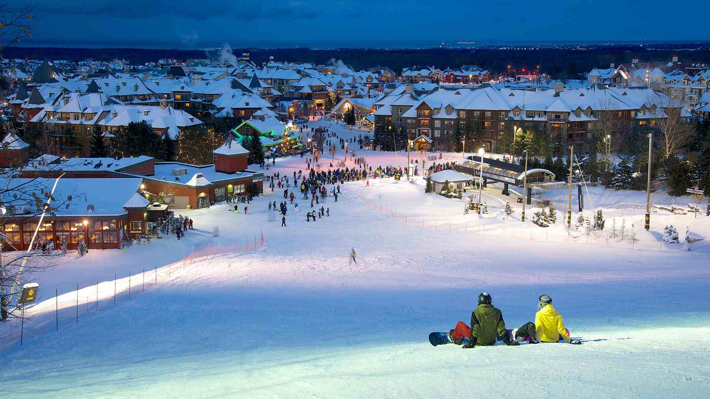

Toronto, Ontario
Professional Teams
Toronto Maple Leafs - NHL Hockey
Season: October to April
Venue: Scotiabank Arena
Website: Toronto Maple Leafs
Twitter: @MapleLeafs
Toronto Raptors - NBA Basketball

Season: October to April
Venue: Scotiabank Arena
Website: Toronto Raptors
Twitter: @Raptors
Toronto Blue Jays - MLB Baseball

Season: April to September
Venue: Rogers Centre
Website: Toronto Blue Jays
Twitter: @BlueJays
Toronto Argonauts - CFL Football
Season: June to November
Venue: BMO Field
Website: Toronto Argonauts
Twitter: @TorontoArgos
Toronto FC - MLS Soccer
Season: March to October
Venue: BMO Field
Website: Toronto FC
Twitter: @TorontoFC
York United FC - CPL Soccer
Season: March to October
Venue: York Lions Stadium
Website: York United FC
Twitter: @Yorkutdfc
Toronto Rock - NLL Lacrosse
Season: December to May
Venue: FirstOntario Centre
Website: Toronto Rock
Twitter: @TorontoRockLax
Recreational Activities
Golf
Website: St. George’s Golf & Country Club
Location: Etobicoke, Ontario (0.75hr drive from Toronto)
TPC Toronto at Osprey Valley
Website: TPC Toronto at Osprey Valley
Location: Caledon, Ontario (1.5hr drive from Toronto)
Rocky Crest Golf Resort
Website: Rocky Crest Golf Resort
Location: MacTier, Ontario (2.5hr drive from Toronto)
Wyndance Golf Club
Website: Wyndance Golf Club
Location: Uxbridge, Ontario (1.25hr drive from Toronto)
Ski
Website: Blue Mountain Resort
Location: Blue Mountain, Ontario (2.5hr drive from Toronto)
Horseshoe Resort
Website: Horseshoe Resort
Location: Barrie, Ontario (1.75hr drive from Toronto)
Brimacombe
Website: Brimacombe
Location: Kirby, Ontario (1hr drive from Toronto)
Mount St. Louis Moonstone
Website: Mount St. Louis Moonstone
Location: Coldwater, Ontario (1.75hr drive from Toronto)